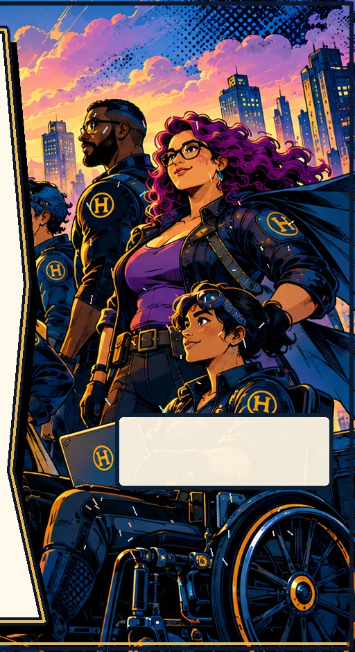

The Mission Architect’s Field Guide
Two-page quick reference to the five-step process, four-question starter canvas, and novice test.
Download PDF (2 pages) ↓DEVLEARN 2026 · SESSION 606
Design for Engagement & Impact: Escape-Room-Style Learning Tied to Real Performance Tasks
One meaningful decision is enough to begin. This page follows the framework, tools, and references in the session presentation.

01 / WHAT YOU CAN REUSE · SLIDE 23
The Field Guide is a quick-reference companion. The other four handouts provide the design canvas, puzzle mechanics, playtesting and logistics, and pilot proposal promised in the presentation.
Two-page quick reference to the five-step process, four-question starter canvas, and novice test.
Download PDF (2 pages) ↓Two-page worksheet for defining the performance need, designing the challenge, and planning feedback and transfer.
Download PDF (2 pages) ↓24 mechanics and reveal techniques, six buildable examples, quality checks, and further reading.
Download PDF (10 pages) ↓Two-page planning and observation checklist for large groups, self-checks, access, and iterative testing.
Download PDF (2 pages) ↓Two-page stakeholder pitch and AI drafting prompts with mandatory human validation.
Download PDF (2 pages) ↓02 / DESIGN FRAMEWORK · SLIDES 7–16
Start with performance. Make the thinking playable. Expand a step to review its prompts and intended output.
Key moves: Spot the pattern · Gather evidence · Check the cause · Define the action
Your output: A specific practice-worthy behavior
Key moves: GIVEN · DO · STANDARD · SCORE IT
Your output: An observable objective + success criterion
Key moves: Select mechanic(s) · Add narrative · Sketch the flow
Your output: A matched mechanic + meaningful story
Key moves: Required info · Create artifacts · Establish solution · Playtest everything
Your output: Playable artifacts + a verified solution
Key moves: Debrief · Help · Update · Beyond
Your output: Hint guide + updated final materials + transfer ideas
03 / PUZZLE TOOLBOX · SLIDE 11
| Learners need to… | Puzzle mechanic | DIY example |
|---|---|---|
| Prioritize risks | Sort / rank | Triage competing alerts |
| Follow a sequence | Order steps | Restore a process flow |
| Evaluate evidence | Deduction / logic | Reconcile conflicting reports |
| Apply constraints | Route / assemble | Configure safe equipment |
| Interpret information | Decode / overlay | Reveal meaningful data |
| Synthesize findings | Meta-puzzle | Combine chapter artifacts |
For each puzzle: What is at stake? What must players do? What changes when they succeed?
04 / PRACTICAL LOGISTICS · SLIDE 20
05 / FURTHER READING · SLIDE 24
Two more useful references for planning measurable practice and checking the accessibility of interactive learning materials.
KEEP THE CONVERSATION GOING
I'd love to hear how you adapt these approaches to your own learners, teams, or tricky workplace problems.
START SMALL TEST EARLY DEBRIEF WITH PURPOSE